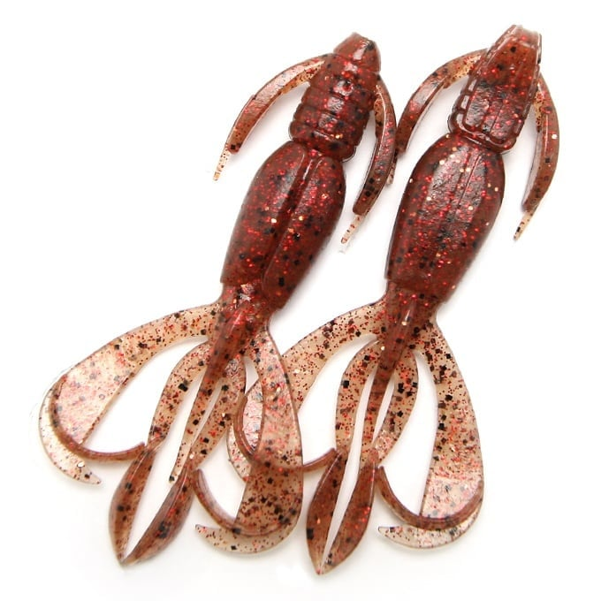
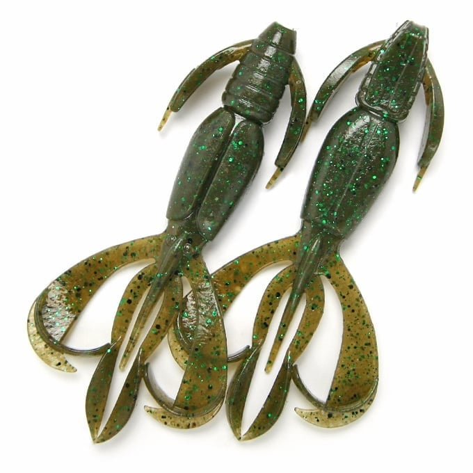
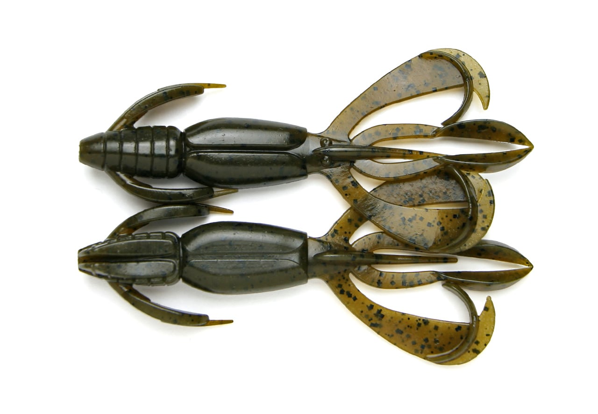
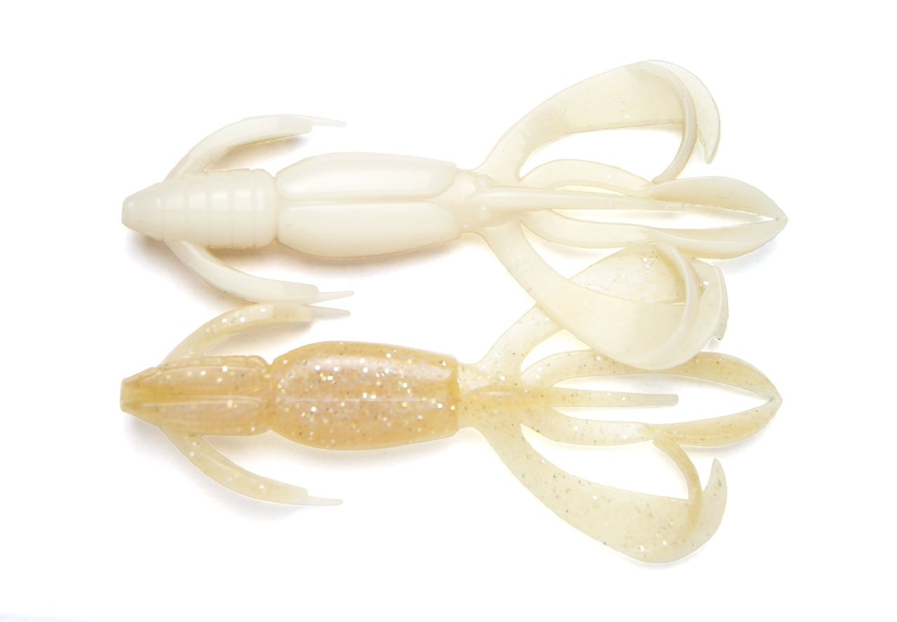

クレイジーフラッパー2.8インチ
（Crazy Flapper 2.8"）
クレイジーフラッパー2.8インチ（Crazy Flapper 2.8"）はKEITECH（ケイテック）のクローワームです。
「高い効率で水をつかみ、つかんだ水をよどみなくアクションに変える。そして落とすだけで魚を釣ってしまう」。KEITECHがクローワームに求めた要件を詰め込んだ超アクション系クローワームです。2.8インチはオカッパリでも扱いやすい中間サイズで、チヌ（クロダイ）・キビレ向けのチニングスペシャルカラーも用意されています。

画像出典:KEITECH公式HP
スペック
- メーカー
- KEITECH（ケイテック）
- タイプ
- クローワーム（ザリガニ系）
- サイズ
- 2.8インチ
- 自重
- 3.4g
- 入数
- 8本
- 推奨フック
- ストレートワームフック#1／オフセットワームフック#1・#2
- 特徴
- 全色イカフレーバー配合・塩は腹部のみ
- ターゲット
- ブラックバス・チヌ・キビレ・ロックフィッシュ
- 価格
- 770円（税込847円）
▼今すぐチェック

クレイジーフラッパー2.8インチの特徴
短いフォールでも即座にウデがはためく、レスポンスの高いクローワーム
-
瞬時に水をつかむフラッパーテール
ウデ（フラッパーテール）がはためいて水を揺らす。公式では「水深30cm、1秒にも満たないフォール、1/8oz以下のシンカー」という条件でも高いレスポンスを出せると紹介されていて、落とすだけで存在感をアピールできる。
-
カバーに強い硬めのマテリアル
サイズに不釣り合いなほど硬いプラスチックを使用し、濃いカバーで使ってもへこたれにくい。塩は腹部だけに入れて低重心に仕上げている。
-
着底姿勢とスリ抜けを考えた尾部
サイドフラップは着底時の横倒れを防ぐスタビライザー、尾部の突起は滑らかにスリ抜けるためのデザイン。フックセットではハリ先が守られ、ワームがずれにくい。
クレイジーフラッパー2.8インチの使い方
バスではテキサスリグやフリーリグでカバーやボトムに落とし、リフト＆フォールで誘うのが基本。フォールの短い浅場でもウデがすぐに動くので、テンポよく撃っていけます。
チヌ・キビレを狙うなら、フリーリグやジカリグでボトムを取り、ズル引きや小さなリフト＆フォールで甲殻類を演出しましょう。出荷時は触角とウデがくっついた「ファクトリーロック」の状態なので、使う前に3か所のロックを手で外してください。
クレイジーフラッパー2.8インチの得意な状況
ブッシュやテトラなどのカバー撃ち、浅場のボトム、ザリガニやカニ・エビを食べている魚を狙う状況が得意です。
チニングスペシャルカラーはチヌ・キビレだけでなくロックフィッシュにも有効とされているので、ソルトのボトムゲームでも出番があります。
ワンポイント
2.8インチは8本入りで、インナートレーが2枚。トレーごとポケットに入れて持ち歩けるので、オカッパリのランガンでも使いやすいサイズです。
使用上の注意：使う前に足（ウデ）を割くのを忘れずに！
クレイジーフラッパーは、ウデ（フラッパーテール）が曲がったりねじれたりしないように、出荷時は触角の先端同士と、ウデとヒゲがくっついた「ファクトリーロック」の状態になっています。
このまま使うとウデが動かず、クレイジーフラッパー本来のアクションが出ません。パッケージから出したら、3か所のロックを手で外して（足を割いて）からフックにセットしましょう。ハサミなどは必要なく、手で簡単に外せます（公式の注意事項より）。
サイズの使い分け
| サイズ | 自重・入数 | 推奨フック（オフセット） |
|---|---|---|
| 2インチ | 約1.2g・8本 | #5・#6 |
| 2.4インチ | 約2.1g・10本 | #3・#4 |
| 2.8インチ | 3.4g・8本 | #1・#2 |
| 3.6インチ | 6.6g・7本 | #1/0・#2/0 |
| 4.4インチ | 12.0g・6本 | #3/0・#4/0 |
※数値は公式ページより（2025年10月1日の価格改定後）。チニングスペシャルカラーは2・2.4・2.8インチのみの展開です。
オススメカラー
クレイジーフラッパーはサイズごとにカラーの展開が異なります。2.8インチで選べる色から、チヌ向けとバス向けの定番を紹介します。

519：エビミソレッドコパーチニングスペシャルカラー。エビの頭（ミソ）を思わせる赤系で、甲殻類を食べているチヌに。

521：ヨドガワクローチニングスペシャルカラー。濁りのある河川や汽水域で使いたいクロー系。

101：グリーンパンプキンペッパー全サイズで展開する定番。バスでもチヌでも迷ったらまずこの色。

422：サイトフラッシュアングラーから見やすいカラー。ワームの位置を目で追いたい時に。
画像出典:KEITECH公式HP
クレイジーフラッパー2.8インチに似ているルアー
-
 シルバーウルフ アーバンクローラー2.5
DAIWA
詳細はこちら＞
シルバーウルフ アーバンクローラー2.5
DAIWA
詳細はこちら＞
チヌのフリーリグ専用に作られたクロー系。チニングで食わせを重視したい時の持ち替え先に。
-
 コーヴァイチュー2.8インチ
SMITH
詳細はこちら＞
コーヴァイチュー2.8インチ
SMITH
詳細はこちら＞
チヌの習性から作られた専用ワーム。ボトムを一定速度で引く釣りに。
-
 ハタ喰い・鵺
RUDIE'S
詳細はこちら＞
ハタ喰い・鵺
RUDIE'S
詳細はこちら＞
ラバー付きの根魚用ワーム。ハタやロックフィッシュをメインに狙う時に。